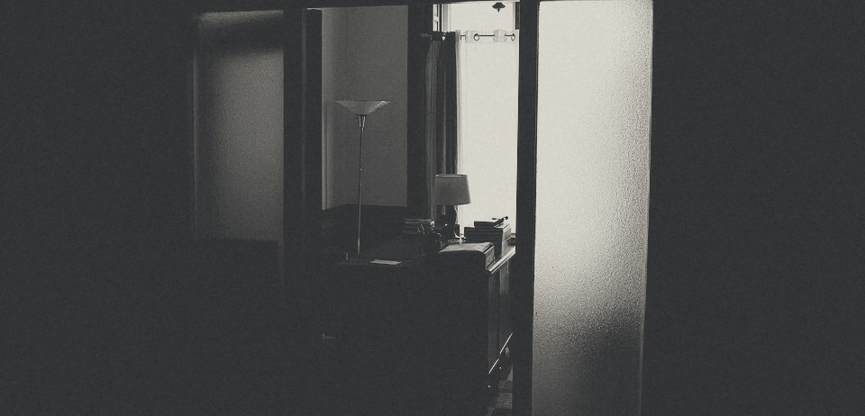

雇う条件を決める
時給・勤務時間・試用期間
相談はじめて人を雇う、会社とお店へfor the first hire
十月の手続き最低賃金が変わる時期です。時給の見直しを。

その想いに、手続きで応えるのが〇〇事務所の仕事です。監督署、ハローワーク、年金事務所への届け出は、まとめてお引き受けします。従業員10名までの会社とお店のための事務所です。
SHIZUOKA — LABOR & SOCIAL SECURITY
TO DO
CHAPTER:01
届出の多くは「雇った日から何日以内」と期限が決まっています。全体を先に見ておけば、慌てずに済みます。
時給・勤務時間・試用期間
相談ハローワーク・求人サイト
相談どんな人と働きたいか
ご自身でお店の働き方に合わせて
代行法律で書面の明示が必要です
代行業種によって保健所・県へ
代行1人でも雇ったら必要です
代行週20時間以上働く人がいるとき
代行法人は1名から
代行締め日・支払日・残業代
代行税務署へ
税理士と連携残業や休日出勤があるとき
代行労働者名簿・賃金台帳・出勤簿
代行鍵・制服・仕事の説明
ご自身で11／14
十四のうち十一は、書類の作成から役所への提出まで任せていただけます。ご自身で行うのは、面接と初日の受け入れ、それから「どんな人と働きたいか」を考えることだけです。
CHAPTER:02
FEE — No.0001
はじめて人を雇う 様〇〇事務所
件名はじめての一式
合計
88,000円（税込）
はじめて人を雇うときの手続きを一度に。雇い入れから3か月間は、労務の質問にメールで何度でもお答えします。
一式で相談する→HIRING人を雇うとき
22,000円
→33,000円
→44,000円
→22,000円
→165,000円〜
→OPENINGお店を開くとき
44,000円〜
→132,000円〜
→ひとつから頼めます。顧問契約は不要です。金額は税込み、役所に納める手数料などの実費は別です。※作例のための架空の価格です。
CHAPTER:03
FLOW
やり取りはオンラインと電子申請で完結します。もちろん、静岡市の事務所にお越しいただいても構いません。
01／04
相談から提出まで、書類は4枚。1枚ずつ、こちらで進めます。
STEP 011分
空いている日時を選んで予約します。相談したいことは一言で大丈夫です。
STEP 0230分・無料
ビデオ通話か事務所で。いつ・何を・どの順番でやるかを、一枚の表にしてお渡しします。
STEP 03翌営業日まで
必要な手続きと金額を書面でお出しします。この時点で費用はかかりません。
STEP 04約2〜3週間
必要な情報はフォームで集め、電子申請で提出します。進み具合は都度ご連絡します。
PROFILE
CHAPTER:04
社会保険労務士・特定行政書士
実家の定食屋が、最初のアルバイトを
雇った日のことを覚えています。
父は料理の腕はあっても、書類はさっぱりでした。保険の手続きを後回しにして、あとで慌てて役所に通ったのを、小学生だった私は横で見ていました。人を雇うのは、お店にとって大きな一歩です。その一歩を、手続きの心配なしに踏み出してほしい。それがこの事務所を開いた理由です。
※ 人物・経歴は架空です。実際の制作では、代表の写真を撮影してこの欄に使います。
Q&A
CHAPTER:05
はい、むしろその段階がいちばんおすすめです。雇った場合にかかる保険料や手続きの全体を先に知っておくと、時給や勤務時間を決めやすくなります。
労災保険は1人でも雇えば必要です。雇用保険や社会保険は、勤務時間や会社の形によって変わります。無料相談で、あなたのお店の場合を具体的にお答えします。
労務の手続きは電子申請で全国対応しています。営業許可など窓口での手続きが必要なものは、地域によってはお受けできない場合があります。
こちらから契約をお願いする連絡はしません。お見積りを見てから、ご自身のペースで決めてください。
税金の届出は税理士さん、労務と許可は私たち、という分担が一般的です。必要があれば、税理士さんと直接やり取りします。
無料相談では、あなたのお店で必要な手続きを一枚の表にしてお渡しします。そのまま持ち帰って、ご自身で進めていただいても構いません。
相談の日時を選ぶ→オンライン（Zoom・Google Meet）または静岡市の事務所にて。
000-0000-0000
平日 9:00〜18:00／土曜は月2回初回相談